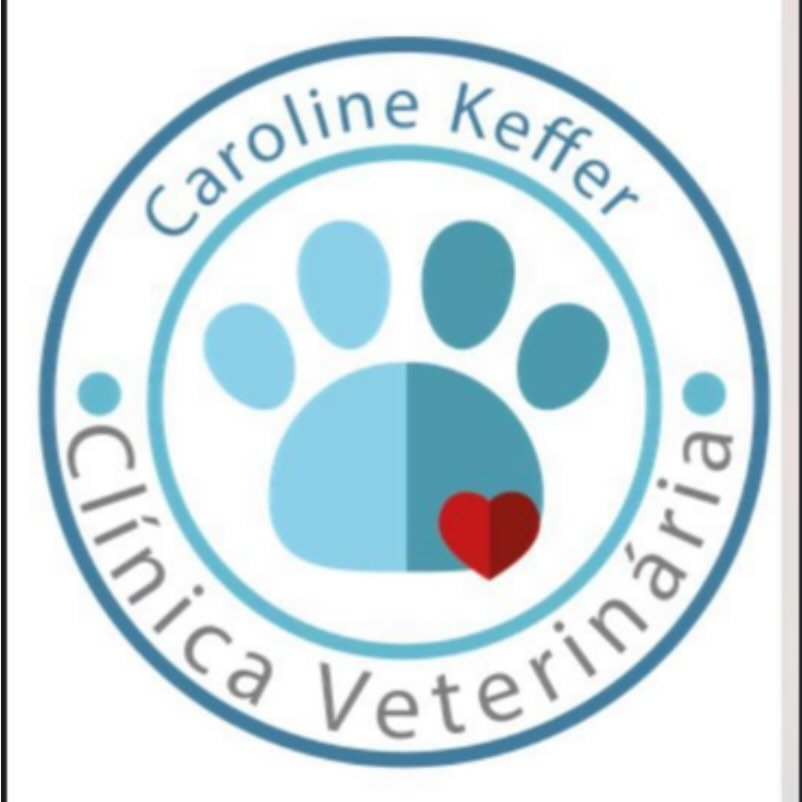

Aberto agora
Serviços
Planos
A clínica
Equipe
Dúvidas
Onde ficamos
Agendar pelo WhatsApp
Dra. Carol
Tudo para seu pet,
onde ele se sente
em casa.
Clínica, cirurgia, exames, banho e tosa, com a Dra. Carol.
Agendar pelo WhatsApp
Ver serviços